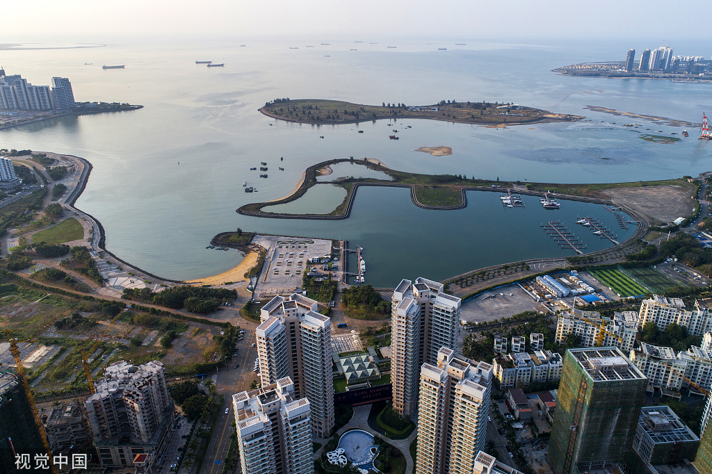
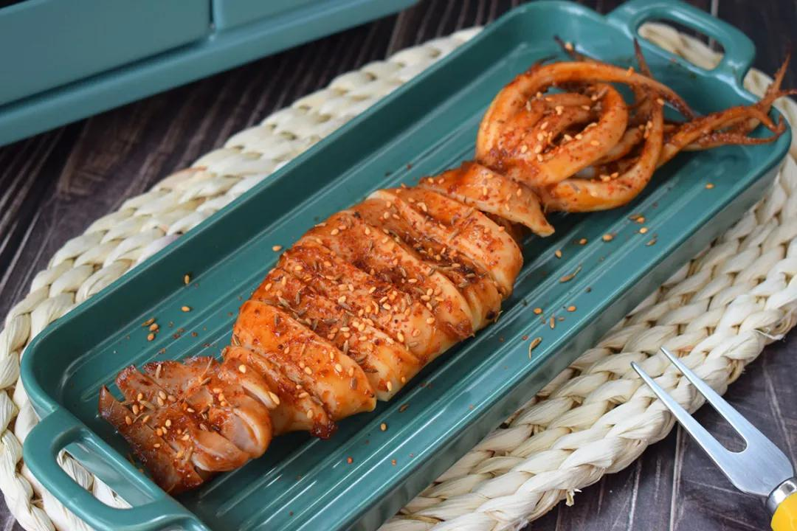

Haikou, the capital of Hainan Province, is a coastal gem where tropical vibes blend with rich history. Unlike the bustling beaches of Sanya, Haikou offers a slower, more authentic taste of Hainan: coconut palms line tree-shaded streets, ancient towns hold stories of maritime trade, and fresh seafood tastes like the ocean itself. A trip here is about embracing laid-back island life—strolling along coastal promenades at sunset, wandering old lanes filled with traditional courtyard houses, and savoring snacks that carry the warmth of the tropics.

Nature lovers will fall for Haikou Bay’s golden beaches (perfect for a lazy afternoon), Dongzhaigang Mangrove Nature Reserve (a lush wetland where mangroves twist into the sea), and Five Finger Mountain (a short drive away, with misty peaks and waterfalls). History buffs can step back in time at Qilou Old Street (a 100-year-old street with colonial-style “arcade buildings”), Haikou Museum (housed in a former imperial examination hall), and Xiuying Fort (a Ming Dynasty military fortress that once guarded the coast).
And the food? It’s a celebration of Hainan’s tropics. Hainanese Chicken Rice (tender chicken with fragrant rice) is a must-try, while Coconut Rice (glutinous rice steamed in a coconut shell) tastes like a sweet island hug. For seafood lovers, Grilled Fresh Squid (caught that morning) is smoky, tender, and full of ocean flavor. By the end of your trip, you’ll understand why Haikou is called “Hainan’s Tropical Gateway.”

Tip 1: Winter (November–February): Mild (18°C–26°C), dry, and cool—ideal for beach walks, mangrove hikes, and exploring old towns.
Tip 2: Spring (March–April): Warm (22°C–28°C) with blooming flowers (e.g., bougainvillea), but less rainy than summer.
Tip 3: Avoid summer (May–October): Hot (28°C–35°C) and humid with frequent tropical rains; typhoons may occur from July to September.
Tip 1: Getting to Haikou:
Fly to Haikou Meilan International Airport (HAK)—take Metro Line 1 (30 mins, 5 CNY) or a taxi (40 mins, ~80 CNY) to downtown. High-speed trains from Sanya (1.5 hours, ~100 CNY) or文昌 (Wenchang, 40 mins, ~30 CNY) are convenient.
Tip 2: Getting Around:
Metro: Lines 1 and 2 cover major spots (e.g., Qilou Old Street, Haikou Bay); single ride 2–6 CNY.
Buses: Cheap (2 CNY) for reaching mangroves or forts; use the “Haikou Bus” app for routes.
Taxis/Didi: Taxis start at 10 CNY; Didi is better for trips to Dongzhaigang Mangroves (1 hour, ~120 CNY) or Five Finger Mountain (2 hours, ~200 CNY).
Tip 1: Wear sunscreen and a hat: Haikou’s tropical sun is strong even in winter.
Tip 2: Bargain at seafood markets: Haikou’s Binhai Seafood Market lets you pick fresh seafood to cook—negotiate prices before buying.
Tip 3: Try street food at Qilou Old Street: The street comes alive after 6 PM with stalls selling coconut snacks and grilled seafood.